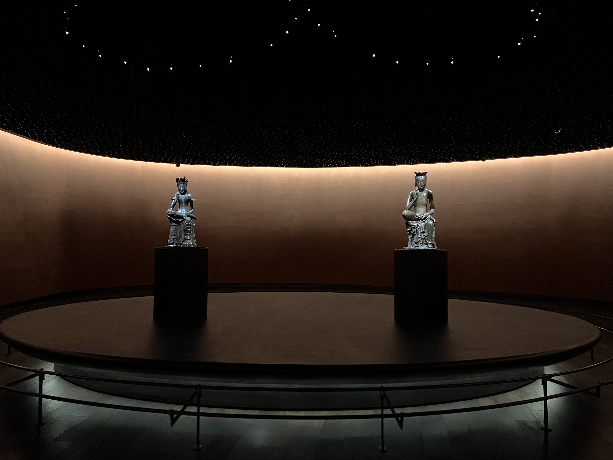

오른발을 왼쪽 무릎에 가볍게 얹고 오른손을 살짝 뺨에 댄 채, 눈을 가늘게 뜨고 오묘한 미소를 지으며 깊은 생각에 잠긴 반가사유상. ‘반가사유상’이라는 명칭은 상像의 자세에서 비롯되었습니다. ‘반가 半跏’는 양쪽 발을 각각 다른 쪽 다리에 엇갈리게 얹어 앉는 ‘결가부좌 結跏趺坐’에서 한쪽 다리를 내려뜨린 자세입니다. ‘사유 思惟’는 인간의 생로병사를 고민하며 깊은 생각에 잠긴 상태를 나타냅니다. ‘ 반가의 자세로 한 손을 뺨에 살짝 대고 깊은 생각에 잠긴 불상’을 반가사유상이라고 합니다. 석가모니는 태자 시절부터 인간의 생로병사를 깊이 고뇌했고, 출가를 결심하는 인생의 갈림길에서도 깊은 생각을 거듭했습니다. 반가사유상은 이처럼 깊은 생각에 빠진 석가모니의 모습이면서, 깨달음을 잠시 미루고 있는 수행자와 보살의 모습이기도 합니다. 반가의 자세는 멈춤과 나아감을 거듭하며 깨달음에 이르는 움직임 가운데 있습니다. 한쪽 다리를 내려 가부좌를 풀려는 것인지, 다리를 올려 가부좌를 틀고 명상에 들어갈 것인지를 알기 어렵습니다. 그래서 반가의 자세는 수행과 번민이 맞닿거나 엇갈리는 순간을 보여줍니다. 살짝 다문 입가에 잔잔히 번진 ‘미소’는 깊은 생각 끝에 도달하는 영원한 깨달음의 찰나를 그려 보게 합니다. 이 찰나의 미소에 우리의 수많은 번민과 생각이 녹아들어 있습니다.
반가사유상의 미학 : 조화와 균형 반가사유상은 단독 예배상으로 많이 만들어졌습니다. 그중에서 신앙의 경지를 최고의 예술로 승화시킨 두 점의 국보 반가사유상은 세속의 감각을 넘어서는 아름다움을 지니고 있습니다. 이 두 점의 반가사유상은 서로 비슷해 보이지만 표정과 옷차림, 크기와 무게, 제작 시기도 모두 다릅니다. 전시실 왼쪽의 반가사유상은 6세기 후반에 제작되었습니다. 날카로운 콧대와 또렷한 눈매, 그리고 화려한 장신구와 정제된 옷 주름 등이 특징으로 꼽힙니다. 양옆으로 휘날리는 어깨 위의 날개옷은 생동감을 주고, 옷 사이로 살짝 드러난 목걸이와 팔 장식은 화려함을 더합니다. 이보다 조금 늦게 7세기 전반에 제작된 전시실 오른쪽 반가사유상은 단순하고 절제된 양식을 보여 줍니다. 아무것도 걸치지 않은 상반신, 세 개의 반원으로 이루어진 보관寶冠의 형태와 두 줄의 원형 목걸이는 간결함을 더합니다. 반면, 무릎 아래의 옷 주름은 물결치듯 율동감 있게 표현되어 입체적으로 흘러내리며 역동성을 보여 줍니다. 양손의 손가락들에선 섬세함이 느껴지고, 힘주어 구부리고 있는 발가락에는 긴장감이 넘쳐흐릅니다.